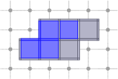
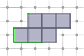
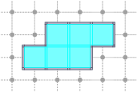
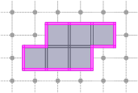

Table of Contents
- Author(s) of this documentation:
- Jacques-Olivier Lachaud
- Since
- 0.9.1
Part of the Topology package.
This part of the manual describes how to represent and process arbitrary cubical complexes.
- Note
- Collapse operation is a backport from ImaGene. [53]
The following programs are related to this documentation: cubical-complex-collapse.cpp, cubical-complex-illustrations.cpp, testCubicalComplex.cpp, cubicalComplexThinning.cpp.
Introduction to cubical complexes
We define a cubical complex C as a collection of cells living in some Khalimsky space. Two cells of C are incident if and only if they are incident in the Khalimsky space. A cubical complex provides many services related to set of (unsigned) cells living in a Khalimsky space: incidence operations, closure, star, link, cell set operations, cell set relations, collapse operation.
- Note
- In opposition to the usual definition of simplical complex, we do not require that all faces of a cell of C belong also to C.
- A digital surface is not a cubical complex, because it does not contain explicitely cells of dimension lower than n-1 and because it requires some sort of orientation. However, it is easy to build an ExplicitDigitalSurface or a LightExplicitDigitalSurface from a CubicalComplex that stores a set of d-1-cells. You just need to create a functor Surfel -> bool from the complex.
To create a cubical complex, we need to specify in which Khalimsky space it lives and also, optionally, the type of container used for storing cells. By default it is std::map but boost::unordered_map or std::unordered_map is also possible.
Cells may be inserted through methods CubicalComplex::insertCell and CubicalComplex::insertCells. Cells are easily created with a model of CCellularGridSpaceND, for instance by specifying Khalimsky coordinates (see Cellular grid space and topology, unoriented and oriented cells, incidence). The small piece of code below creates a ring around a pixel.
Method CubicalComplex::insertCells accepts any range of iterators on cells as input, hence you may for instance directly create a cubical complex from a digital surface (see Digital surfaces).
You have also methods to remove some cells (CubicalComplex::eraseCell, CubicalComplex::eraseCells) and methods to check if a cell belongs to the complex (CubicalComplex::belongs).
- Note
- You may use
std::unordered_maporboost::unordered_mapinstead ofstd::map. It is sometimes slightly faster. In this case you need to define a hash function for cells. Either you provide one, or you just include the file KhalimskyCellHashFunctions.h with:
Last, there is a data associated with each cell of a complex. The data type must either be CubicalCellData or a type that derives from CubicalCellData. This data is used by the functions::collapse operation, a function that is used to make a homotopic thinning of the cubical complex. It may also be used by the user for other purposes, like storing flags, coordinates or anything else associated to a cell. Look at the documentation of CubicalCellData to see the default stored flags and data.
Displaying a 2D cubical complex
2D cubical complex are displayable on a Board (see Board2D: a stream mechanism for displaying 2D digital objects). You just have to output the complex with the stream operator of a board. You may adjust the default style before. The following snippet creates and outputs a 2D complex.
Incidence within a cubical complex
Two cells of a cubical complex are incident if and only if they are incident in the Khalimsky space. From this relation, one can define faces, co-faces, as well as the boundary and co-boundary of a cell.
You have methods to get the faces, the co-faces, the direct faces or co-faces of a cell c, which are outputed with an output iterator:
- CubicalComplex::faces: outputs the faces of c, i.e. all cells of lesser dimension than c and incident to c. You may specify that the complex is closed (if it is, at least locally) to speed-up this function.
- CubicalComplex::directFaces: outputs the direct faces of c, i.e. all cells of dimension one less than c and incident to c. You may specify that the complex is closed (if it is, at least locally) to speed-up this function.
- CubicalComplex::coFaces: outputs the co-faces of c, i.e. all cells of greater dimension than c and incident to c. You may specify that the complex is open (if it is, at least locally) to speed-up this function.
- CubicalComplex::directCoFaces: outputs the direct co-faces of c, i.e. all cells of dimension one more than c and incident to c. You may specify that the complex is open (if it is, at least locally) to speed-up this function.
There are also versions of these methods that return the iterators on these cells, if you need to access them directly in the complex afterwards.
If you wish to get a vector of cells that contains all the proper faces of some cell, then CubicalComplex::cellBoundary does the job. It is in general slightly faster than using CubicalComplex::faces.
If you wish to get a vector of cells that contains all the proper co-faces of some cell, then CubicalComplex::cellCoBoundary does the job. Again it is in general slightly faster than using CubicalComplex::coFaces.
Closure, star and link of cells of a complex
You have three methods to compute these "subcomplexes" of a complex X. In each case, you must give a subcomplex S of X which defines the cells for which you wish to compute the closure, star or link.

CubicalComplex::closure: returns the closure of the cells of S within this complex, i.e. the smallest subcomplex of X that contains each cell in S.
board << domain;board << CustomStyle( X.className(),new CustomColors( Color(80,80,100), Color(180,180,200) ) )<< X;board << CustomStyle( X.className(),new CustomColors( Color::Red, Color(255,120,120) ) )<< X.closure( S );board.saveTikZ( "cubical-complex-illustrations-closure.tikz" );board.clear(); Closure of S in X, displayed in red.
Closure of S in X, displayed in red.CubicalComplex::star: returns the star of the cells of S within this complex, i.e. the union of the star (co-faces + cell) in X of every cell of S.
board << domain;board << CustomStyle( X.className(),new CustomColors( Color(80,80,100), Color(180,180,200) ) )<< X;board << CustomStyle( X.className(),new CustomColors( Color::Blue, Color(120,120,255) ) )<< X.star( S );board.saveTikZ( "cubical-complex-illustrations-star.tikz" );board.clear();Star of S in X, displayed in red.CubicalComplex::link: returns the link of the cells of S within this complex, i.e. the closure of the star of S in X minus the star of the closure of S in X.
board << domain;board << CustomStyle( X.className(),new CustomColors( Color(80,80,100), Color(180,180,200) ) )<< X;board << CustomStyle( X.className(),new CustomColors( Color::Green, Color(120,255,120) ) )<< X.link( S );board.saveTikZ( "cubical-complex-illustrations-link.tikz" );board.clear();Link of S in X, displayed in green.
Interior, boundary of a complex
You have three methods for computing the interior or the boundary of a complex. Note that the boundary and the interior of a complex have an empty intersection:
CubicalComplex::interior: returns the (topological) interior of this complex X, i.e. the cells whose star are homeomorphic to a ball of maximal dimension.
board << domain;board << CustomStyle( X.className(),new CustomColors( Color(80,80,100), Color(180,180,200) ) )<< X;board << CustomStyle( X.className(),new CustomColors( Color::Cyan, Color(120,255,255) ) )<< X.interior();board.saveTikZ( "cubical-complex-illustrations-int.tikz" );board.clear();Interior of X, displayed in cyan.CubicalComplex::boundary: returns the (topological) boundary of this complex X, i.e. the closure of X minus the interior of X. It is worthy to note that the boundary complex may contain cells that are not in X.
board << domain;board << CustomStyle( X.className(),new CustomColors( Color(80,80,100), Color(180,180,200) ) )<< X;board << CustomStyle( X.className(),new CustomColors( Color::Magenta, Color(255,120,255) ) )<< X.boundary();board.saveTikZ( "cubical-complex-illustrations-bd.tikz" );board.clear();Boundary of X, displayed in magenta.- CubicalComplex::getInteriorAndBoundary: returns both the boundary and the interior of X, faster then computing both separately if you need both.
Set operations on complexes
A cubical complex can be seen as a generic container (it is a model of boost::Container). Remember though that it is not a model of boost::DefaultConstructible, because it must know a cellular grid space to be valid. You could thus use operations defined in DGtal::functions::setops (see Set operations on arbitrary containers) to perform set operations and relations on complexes. However, to use the specificity of the templated parameter CellContainer of CubicalComplex, it is better to use operations and relations specifically defined for CubicalComplex, for instance as follows:
You have the following operations:
- operator| : union of two complexes.
- operator|= : assignment union with another complex.
- operator& : intersection of two complexes.
- operator&= : assignment intersection with another complex.
- operator- : set difference of two complexes.
- operator-= : assignment set difference with another complex.
- operator^ : symmetric set difference of two complexes.
- operator^= : assignment symmetric set difference with another complex.
- operator~ : closing of a complex (smallest closed complex containg input complex).
- operator* : opening of a complex (greatest open complex contained in input complex).
And the following relations:
- operator<= : inclusion of two complexes (subset).
- operator>= : inclusion of two complexes (supset).
- operator== : equality of two complexes (both subset and supset).
- operator!= : non-equality of two complexes (equal is false).
All these operations are at most linear in the sum of the number of cells of input complexes, but they are generally exponential in the dimension of complexes.
Topological operations: closing, opening, collapsing a complex
You may close a complex (CubicalComplex::close), i.e. adding cells such that the faces of every cell belongs to the complex. The complex is then said to be closed. The updated complex corresponds to the smallest closed complex containing it.
You may open a complex (CubicalComplex::open), i.e. removing cells such that the co-faces of every cell belongs to the complex. The complex is then said to be open. The updated complex corresponds to the greatest open complex contained in it.
A more difficult topological operation is the collapse (functions::collapse). A collapse transforms a complex by removing cells, but at the end the complex has the same homotopy type as the initial complex. The topology is preserved since only free pairs are removed. The following snippet shows how to collapse complex X, while keeping two cells fixed.
As you can see, when collapsing a complex X, you precise:
- The subcomplex of X that can be collapsed (should be closed, otherwise it is closed).
- A priority object that tells in which order cell are collapsed. If you use CubicalComplex::DefaultCellMapIteratorPriority, then the order follows the values stored in the data associated with each cell. You may use CubicalComplex::operator[] to change this value for each cell. The higher the value the sooner the cell is collapsed.
- Various hints to speed up the process.
Example topology/cubical-complex-collapse.cpp shows that it works also in 3D (in fact, it is nD).

Thinning in cubical complexes
Thinning of digital objects in 2D and 3D with the guarantee that a final skeleton is thin can be achieved directly only in \(\mathbb{Z}^2\) for so-called well-composed images [66]. Nevertheless, the problem can be solved for 3D objects represented by cubical complexes [23].
In [23] Chaussard and Couprie proposed a parallel directional thinning schemes in cubical complexes which allow to obtain a thin result. The implementation in DGtal works for both 2D and 3D cubical complexes.
The first scheme, so-called ParDirCollapse—parallel directional collapse—based on the idea such that free pairs of faces are collapsed with respect to a fixed order of directions and order of face dimensions. In other words, in each iteration we first collapse free pairs of a given direction starting with pairs of the highest dimension. When there is no more free pairs to remove for a given direction then another direction is considered unless the specified number of iterations is not reached . Note in the case of ParDirCollapse the thinness of the result depends on the number of iterations.
The steps below present how to use ParDirCollapse in DGtal:
a) add those includes:
b) create an instance of the class ParDirCollapse and initialize it with an instance of the Khalimsky space:
c) attach a cubical complex \(X\) to be thinned:
d) run the algorithm (here two iterations):

The second scheme, so-called SurfaceCollapse is similar to ParDirCollapse. The only difference is that after each iteration of ParDirCollapse, faces of dimension \(dim(X) - 1\) which are not included in faces of higher dimension are marked as non-collapsible. The final output is guaranteed to be thin i.e. there is no faces of \(dim(X)\).
To run SurfaceCollapse we apply steps a–c for ParDirCollapse and then we apply the step below:
d) run the algorithm:

The last scheme, so-called IsthmusCollapse is similar to SurfaceCollapse. The only difference is that after each iteration of ParDirCollapse, we mark as non-collapsible those faces which are of dimension dim \((X) - 1\) and not included in faces of higher dimension. Moreover, all sub-faces of dimension \(dim(X) - 2\) of those faces have to be not free – are included in other faces of dimension \(dim(X) - 1\). The final output is guarantee to be thin i.e. there is no faces of \(dim(X)\).
To run SurfaceCollapse we apply steps a–c for ParDirCollapse and then we apply the step below:
d) run the algorithm:

For more details see the example topology/cubicalComplexThinning.cpp.